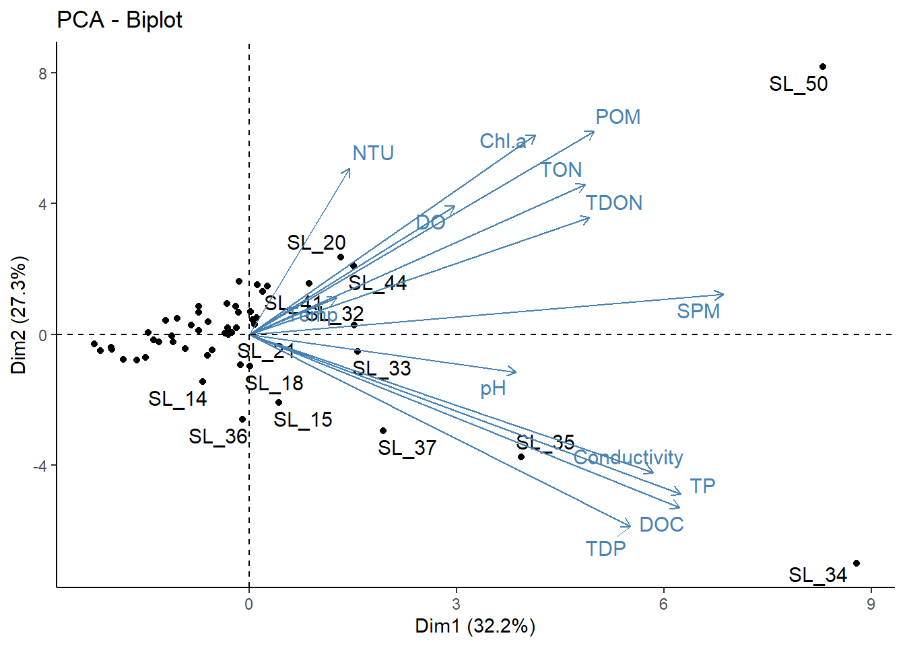
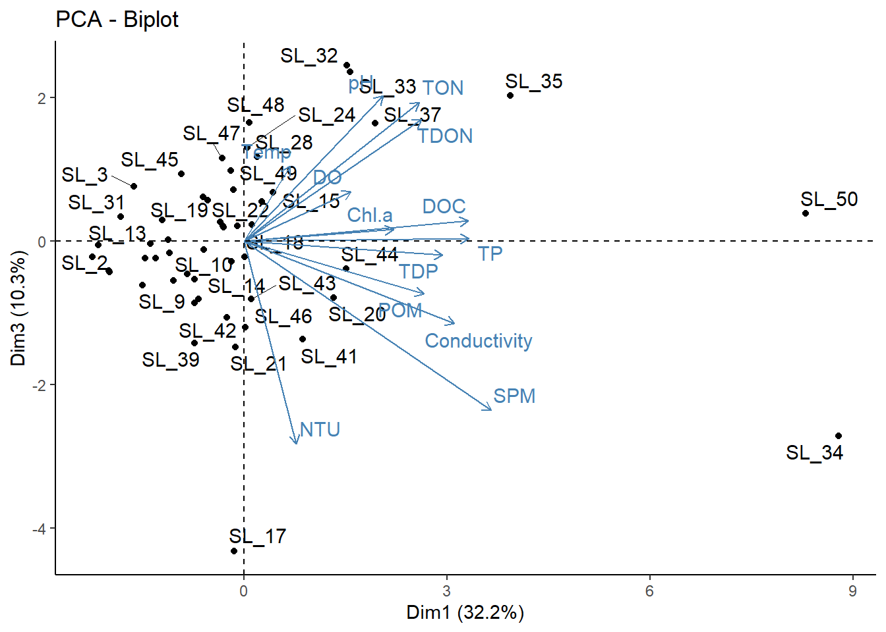
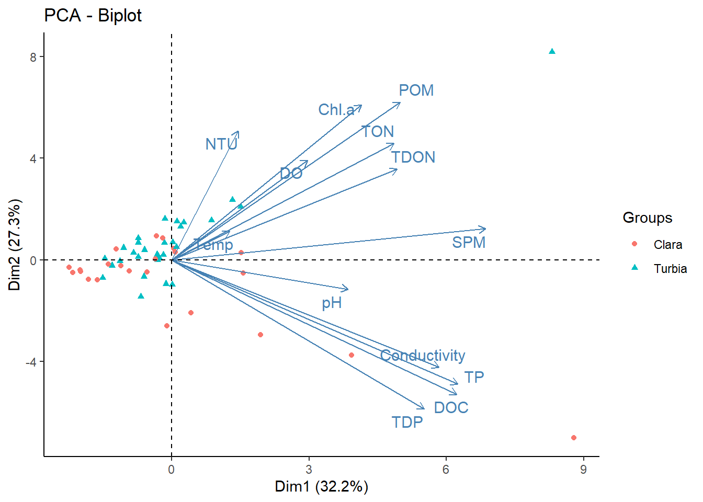
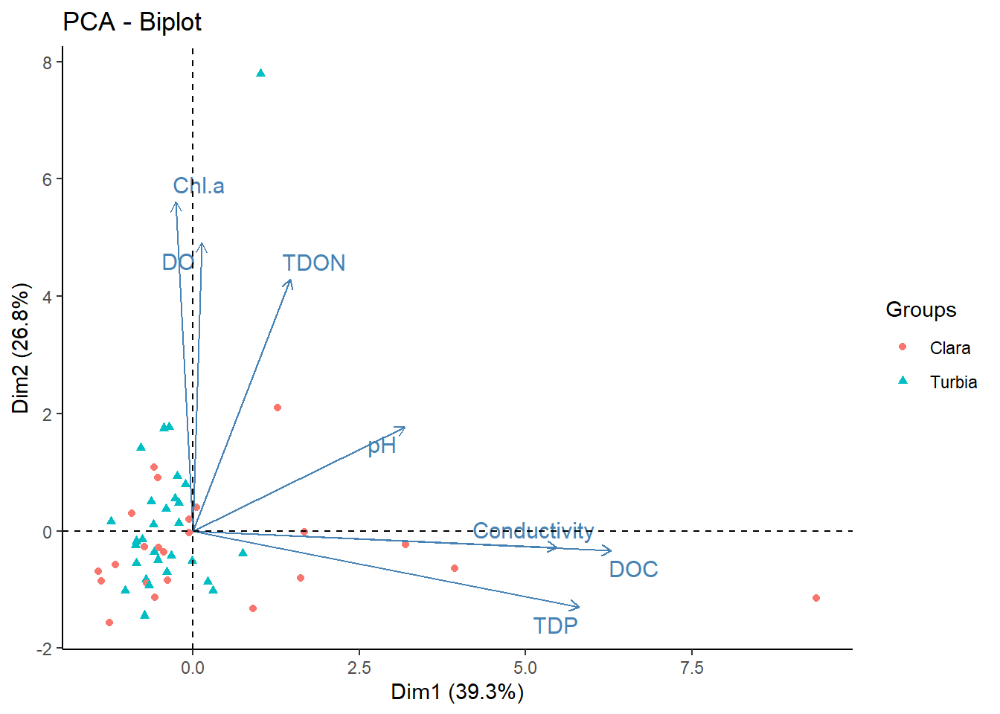
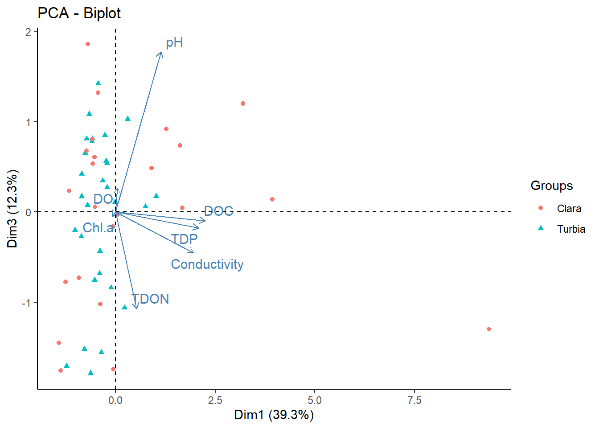

Unidad 4 Análisis multivariados I
Patricia E. García5
Instituto de Investigaciones en Biodiversidad y Medioambiente (INIBIOMA, CONICET-UNComahue)
En esta unidad se verán ejemplos de ACP, NMDS, PERMANOVA
4.1 Análisis de Componentes Principales
Introducción: Algunos sistemas no pueden definirse por sus características individuales, sino que deben verse en conjunto. Un ejemplo muy sencillo para entender este concepto es intentar describir una cara humana con un solo rasgo: la nariz.

Se puede identificar una cara solo describiendo la nariz?
Para describir y reconocer una cara es necesario observar todas sus características: la nariz, los ojos, la boca, las cejas, etc. Es decir, múltiples dimensiones.
El análisis de componentes principales (APC) también conocido por siglas en inglés Principal Componentes Analysis PCA, es una poderosa herramienta estadística para describir un conjunto de datos.
Se basa en la reducción de la multidimensionalidad de una manera “no supervisada”.
Su principal objetivo es proyectar datos en las direcciones de máxima varianza y de este modo eliminar aquellas direcciones o planos que aporten menos información.
El ACP puede aplicarse antes de realizar un análisis de regresión o simplemente con fines exploratorios para ayudar a los investigadores a comprender relaciones entre las variables o descubrir patrones presentes en los datos.
4.1.1 ¿Qué tipos de datos usa una ACP?
Utiliza principalmente variable numéricas continuas que son las que efectivamente entran en el análisis. Estás variables se organizan en columnas, mientras que en las filas se organizan los individuos.

Organización de los datos
Estas bases de datos son de doble entrada, por lo que es posible analizarla desde el punto de vista de los individuos, de tal manera que individuos que tiene características similares estarán más cerca.
Desde el punto de las variables, se pueden analizar las relaciones entre las mismas. El análisis considera relaciones lineales entre las variables y usa coeficientes de correlación. Es importante utilizar la matriz de correlación para observar las relaciones más importantes entre las variables.
4.1.2 ¿Cómo funciona el análisis?
El funcionamiento del análisis es muy sencillo, trata de buscar la dirección o componente que maximice la variación de datos. Es decir que el primer plano/componente trata de capturar la mayor dispersión de los datos.

El primer componente
En el ACP, luego que se encontró el primer componente que maximizó la dispersión de los datos, el segundo componente es ortogonal, es decir a 90°.

4.1.3 Ahora manos a la obra: miremos datos
En RStudio importamos la base de datos ambientales de Castro Berman et al., 2018, disponible como data_cursoR.xlsx en GitHub Limno-con-R/CILCAL2023. Recuerden guardar el archivo en una carpeta llamada data, dentro del Directorio de Trabajo del Proyecto que creamos para esta Unidad (ver cómo hacerlo en la Unidad 1).
library(readxl)
datos <- read_excel("data/data_cursoR.xlsx",
col_types = c("text", "numeric", "numeric",
"numeric", "numeric", "numeric",
"numeric", "numeric", "numeric",
"numeric", "numeric", "numeric",
"numeric", "numeric", "numeric",
"numeric", "numeric", "numeric"),
na = "NA")## New names:
## • `` -> `...1`datos <- data.frame(datos, row.names = 1)
head(datos)## ELEVACION LATITUD LONGITUD Temp Secchi DO pH Conductivity NTU TON
## SL_13 62 -38.4184 -61.7594 17 44 11.8 8.55 0.32 15.7 3438
## SL_17 20 -38.9263 -61.3687 7 8 8.0 8.53 3.43 363.0 4010
## SL_18 119 -38.3474 -60.4527 14 12 9.0 8.84 4.05 110.0 4200
## SL_19 89 -38.4273 -60.3181 14 24 10.8 8.54 1.10 54.4 4738
## SL_20 64 -38.5216 -60.1404 10 9 9.0 8.44 3.25 206.0 7470
## SL_21 194 -38.0508 -60.0340 11 16 10.0 8.30 3.35 129.0 4256
## TDON SPM POM TP TDP Chl.a DOC
## SL_13 2565 11.7 9.2 124 0.1 3.79 4.55
## SL_17 2890 377.5 103.4 272 114.0 68.63 10.98
## SL_18 3909 71.0 23.4 1009 833.0 54.36 253.50
## SL_19 4424 30.9 23.4 162 4.0 66.75 10.12
## SL_20 5107 186.6 62.5 727 456.0 475.36 95.43
## SL_21 3237 111.0 33.4 1365 1363.0 61.81 177.70La base de datos que importamos contiene información acerca de la localización geográfica de los sitios y las variables físico-químicas.
summary(datos)## ELEVACION LATITUD LONGITUD Temp
## Min. :-16.00 Min. :-38.93 Min. :-63.09 Min. : 7.00
## 1st Qu.: 10.00 1st Qu.:-37.49 1st Qu.:-62.25 1st Qu.:15.00
## Median : 58.50 Median :-36.84 Median :-60.23 Median :17.50
## Mean : 73.65 Mean :-36.62 Mean :-60.13 Mean :18.52
## 3rd Qu.:104.00 3rd Qu.:-35.69 3rd Qu.:-57.98 3rd Qu.:22.25
## Max. :246.00 Max. :-34.48 Max. :-56.98 Max. :30.00
##
## Secchi DO pH Conductivity
## Min. : 7.00 Min. : 5.000 Min. :8.000 Min. : 0.320
## 1st Qu.: 12.00 1st Qu.: 8.725 1st Qu.:8.557 1st Qu.: 1.215
## Median : 18.00 Median :10.300 Median :8.795 Median : 2.615
## Mean : 29.44 Mean :10.238 Mean :8.762 Mean : 7.968
## 3rd Qu.: 37.75 3rd Qu.:11.050 3rd Qu.:8.982 3rd Qu.: 5.513
## Max. :140.00 Max. :20.000 Max. :9.400 Max. :202.100
##
## NTU TON TDON SPM
## Min. : 2.70 Min. : 2856 Min. :1926 Min. : 6.70
## 1st Qu.: 27.90 1st Qu.: 4104 1st Qu.:3052 1st Qu.: 36.20
## Median : 83.25 Median : 4872 Median :3478 Median : 75.45
## Mean : 88.67 Mean : 5063 Mean :3790 Mean :116.83
## 3rd Qu.:110.00 3rd Qu.: 5323 3rd Qu.:4356 3rd Qu.:128.53
## Max. :363.00 Max. :10830 Max. :7235 Max. :788.40
##
## POM TP TDP Chl.a
## Min. : 6.70 Min. : 46.0 Min. : 0.1 Min. : 1.58
## 1st Qu.: 20.00 1st Qu.: 324.0 1st Qu.: 114.0 1st Qu.: 15.80
## Median : 29.60 Median : 533.0 Median : 302.0 Median : 52.05
## Mean : 40.80 Mean : 766.1 Mean : 560.3 Mean : 87.80
## 3rd Qu.: 47.92 3rd Qu.: 820.5 3rd Qu.: 624.0 3rd Qu.: 89.13
## Max. :344.00 Max. :4538.0 Max. :4140.0 Max. :981.06
##
## DOC
## Min. : 1.26
## 1st Qu.: 12.36
## Median : 19.45
## Mean : 93.22
## 3rd Qu.: 97.58
## Max. :1010.00
## NA's :1## ELEVACION LATITUD LONGITUD Temp
## Min. :-16.00 Min. :-38.93 Min. :-63.09 Min. : 7.00
## 1st Qu.: 10.00 1st Qu.:-37.49 1st Qu.:-62.25 1st Qu.:15.00
## Median : 58.50 Median :-36.84 Median :-60.23 Median :17.50
## Mean : 73.65 Mean :-36.62 Mean :-60.13 Mean :18.52
## 3rd Qu.:104.00 3rd Qu.:-35.69 3rd Qu.:-57.98 3rd Qu.:22.25
## Max. :246.00 Max. :-34.48 Max. :-56.98 Max. :30.00
##
## Secchi DO pH Conductivity
## Min. : 7.00 Min. : 5.000 Min. :8.000 Min. : 0.320
## 1st Qu.: 12.00 1st Qu.: 8.725 1st Qu.:8.557 1st Qu.: 1.215
## Median : 18.00 Median :10.300 Median :8.795 Median : 2.615
## Mean : 29.44 Mean :10.238 Mean :8.762 Mean : 7.968
## 3rd Qu.: 37.75 3rd Qu.:11.050 3rd Qu.:8.982 3rd Qu.: 5.513
## Max. :140.00 Max. :20.000 Max. :9.400 Max. :202.100
##
## NTU TON TDON SPM
## Min. : 2.70 Min. : 2856 Min. :1926 Min. : 6.70
## 1st Qu.: 27.90 1st Qu.: 4104 1st Qu.:3052 1st Qu.: 36.20
## Median : 83.25 Median : 4872 Median :3478 Median : 75.45
## Mean : 88.67 Mean : 5063 Mean :3790 Mean :116.83
## 3rd Qu.:110.00 3rd Qu.: 5323 3rd Qu.:4356 3rd Qu.:128.53
## Max. :363.00 Max. :10830 Max. :7235 Max. :788.40
##
## POM TP TDP Chl.a
## Min. : 6.70 Min. : 46.0 Min. : 0.1 Min. : 1.58
## 1st Qu.: 20.00 1st Qu.: 324.0 1st Qu.: 114.0 1st Qu.: 15.80
## Median : 29.60 Median : 533.0 Median : 302.0 Median : 52.05
## Mean : 40.80 Mean : 766.1 Mean : 560.3 Mean : 87.80
## 3rd Qu.: 47.92 3rd Qu.: 820.5 3rd Qu.: 624.0 3rd Qu.: 89.13
## Max. :344.00 Max. :4538.0 Max. :4140.0 Max. :981.06
##
## DOC
## Min. : 1.26
## 1st Qu.: 12.36
## Median : 19.45
## Mean : 93.22
## 3rd Qu.: 97.58
## Max. :1010.00
## NA's :1En resumen, tenemos 52 observaciones (individuos) y 17 variables. De las variables presentes las primeras 3 (Elevación, Longitud y Latitud) corresponden a la localización de los ambientes.
Las variables son continuas y cada una está medida de manera distintas por lo que cada una tiene su unidad y a su vez su variación. Debido a esto es necesario estandarizar y centrar las variables. La estandarización simplemente le resta a cada observación el promedio de la variable y la divide por la desviación estandar de la variable. Mientras que centrar significa que se mueve la nube de puntos de los individuos al centro de gravedad.
?scale # el comando para estandarizar los datos## starting httpd help server ... donedatos.stand <- data.frame(scale(datos [4:17], center = T))Para este ejemplo solo usé las variables físico-químicas, para ello utilicé los corchetes e indiqué el número de columnas que quería se estandarizaran, de la columna 4 a la columna 17: [4:17].
El comando para realizar el análisis de componentes principales , está en el paquete FactoMiner. Este paquete es muy versatil y se mantiene actualizado. Aqui adjunto el link:
library(FactoMineR)## Warning: package 'FactoMineR' was built under R version 4.2.3?PCA ## ayuda del comando PCA
# Realizar el analisis solo en las variables numericas continuas
res.pca <- PCA(datos.stand [-2], graph=FALSE) # se guarda en el objeto res.pca (uso res para indicar que es un resultado) ## Saqué la variable sechi del analisis [-2]## Warning in PCA(datos.stand[-2], graph = FALSE): Missing values are imputed by
## the mean of the variable: you should use the imputePCA function of the missMDA
## package¡Recibimos un mensaje de advertencia! Este mensaje nos indica que hay valores faltantes y que el comando va a usar el promedio de la variable en las celdas donde falten datos.
Importante: algunos análisis son muy sensibles a la falta de datos.
¡Listo hemos realizado el analisis de ACP! El objeto “res.pca” es una lista que tiene toda la información.
print(res.pca)## **Results for the Principal Component Analysis (PCA)**
## The analysis was performed on 52 individuals, described by 13 variables
## *The results are available in the following objects:
##
## name description
## 1 "$eig" "eigenvalues"
## 2 "$var" "results for the variables"
## 3 "$var$coord" "coord. for the variables"
## 4 "$var$cor" "correlations variables - dimensions"
## 5 "$var$cos2" "cos2 for the variables"
## 6 "$var$contrib" "contributions of the variables"
## 7 "$ind" "results for the individuals"
## 8 "$ind$coord" "coord. for the individuals"
## 9 "$ind$cos2" "cos2 for the individuals"
## 10 "$ind$contrib" "contributions of the individuals"
## 11 "$call" "summary statistics"
## 12 "$call$centre" "mean of the variables"
## 13 "$call$ecart.type" "standard error of the variables"
## 14 "$call$row.w" "weights for the individuals"
## 15 "$call$col.w" "weights for the variables"4.1.3.1 Análisis de los resultados
El ACP calcula los autovalores (eigenvalues) y autovectores propios a partir de la matriz de covarianzas. El cálculo de los vectores depende de la cantidad de dimensiones de los datos. Los autovalores no son más que la magnitud de los autovectores, ambos ayudan a calcular los Componentes principales.
eigenvalues <- res.pca$eig# eigenvalues
head(eigenvalues[, 1:3])## eigenvalue percentage of variance cumulative percentage of variance
## comp 1 4.1797364 32.151818 32.15182
## comp 2 3.5439409 27.261084 59.41290
## comp 3 1.3449952 10.346117 69.75902
## comp 4 1.0490855 8.069888 77.82891
## comp 5 0.9618192 7.398609 85.22752
## comp 6 0.8132415 6.255704 91.48322En la primer columna se observa el valor del eigenvalue, en la segunda columna se observa el porcentaje de variación explicada. En la tercera columna se muestra el porcentaje de variación acumulada.
Un paquete útil para mejorar los gráficos de los analisis multivariados es factoextra.
library(factoextra)
fviz_eig(res.pca, addlabels = TRUE)# scree plot de los eigenvalue
Los eigenvalues se utilizan para determinar el número de componentes que deben conservarse. Existen dos maneras frecuentes de analizar estos eigenvalues, por un lado muchos investigadores utilizan los eigenvalues > 1. Otra manera de determinar el número de componentes es por la cantidad de variación explicada, muchos usan > 70% de la variabilidad de los datos.
En este ejemplo, los primeros dos planos solo explican un 59.5% de la variabilidad de los datos y al usar un 3 eje se explica 69.8%. Decido usar 3 ejes para describir estos datos.
4.1.3.2 Visualizar los datos
Ahora vamos a visualizar los tres ejes. Como habíamos dicho previamente, el ACP genera gráficos de los individuos y de las variables. Actualmente es más frecuente usar gráficos en los que se observen ambos: los individuos y las variables. Este tipo de gráficos se denomina biplots.
?fviz_pca_biplot
fviz_pca_biplot(res.pca, repel=TRUE, invisible = "quali")+theme_classic()## Warning: ggrepel: 38 unlabeled data points (too many overlaps). Consider
## increasing max.overlaps
El gráfico muestra los ejes o componentes 1 y 2. A simple vista se observa que algunos individuos, como SL_34 por ejemplo es la muestra que tiene mas DOC (carbono orgánico disuelto), mientras que la muestra SL_50 es la que presentó la mayor cantidad de POM (materia orgánica particulada).
Interpretación: el primer componente (Dim1 32.%) divide a las muestras que tienen más DOC, más conductividad, más TP hacía la derecha del gráfico. El componente 2, parece que divide a las muestras de acuerdo a la POM, la clorofila a, la salinidad.
Ahora vamos a ver el componente 1 vs el componente 3.
fviz_pca_biplot(res.pca, axes=c(1,3), repel=TRUE, invisible = "quali")+theme_classic()## Warning: ggrepel: 20 unlabeled data points (too many overlaps). Consider
## increasing max.overlaps
Una función importante del paquete FactoMiner, es el comando dimdesc. El mismo se utiliza para identificar las variables más significativamente asociadas a un componente.
dimdesc(res.pca, axes = c(1:3), proba = 0.05)## $Dim.1
##
## Link between the variable and the continuous variables (R-square)
## =================================================================================
## correlation p.value
## SPM 0.8005755 1.052112e-12
## TP 0.7292919 8.700526e-10
## DOC 0.7269277 1.048135e-09
## Conductivity 0.6820821 2.578475e-08
## TDP 0.6440372 2.589279e-07
## POM 0.5824318 5.906561e-06
## TDON 0.5749478 8.275646e-06
## TON 0.5672584 1.160335e-05
## Chl.a 0.4838790 2.787599e-04
## pH 0.4499121 8.187113e-04
## DO 0.3463183 1.190357e-02
##
## $Dim.2
##
## Link between the variable and the continuous variables (R-square)
## =================================================================================
## correlation p.value
## POM 0.7266597 1.070368e-09
## Chl.a 0.7136585 2.879319e-09
## NTU 0.5945254 3.363780e-06
## TON 0.5361705 4.189718e-05
## DO 0.4590453 6.194896e-04
## TDON 0.4178871 2.052244e-03
## Conductivity -0.4936215 2.003631e-04
## TP -0.5713221 9.715629e-06
## DOC -0.6187953 1.011371e-06
## TDP -0.6865882 1.917673e-08
##
## $Dim.3
##
## Link between the variable and the continuous variables (R-square)
## =================================================================================
## correlation p.value
## pH 0.4460824 9.181604e-04
## TON 0.4261880 1.631046e-03
## TDON 0.3729687 6.466085e-03
## SPM -0.5178939 8.417748e-05
## NTU -0.6197587 9.622302e-07Estos resultados nos permiten asociar variables a los distintos ejes/componentes. Se puede inclusive establecer un criterio ya que usa coeficientes de correlación. Para este ejemplo, se puede usar las variables que tienen una correlación >0.6 con el eje. Para el componente principal 1, que explica (32.2%), las variables asociadas a este componente son DOC, TP, TDP, conductivity y SPM. Para el componente principal 2 (27.3%), está asociado a POM, clorofila a y NTU (turbidez). Finalmente, el componente principal 3 (10.3%) estaría asociado de manera negativa solo a la salinidad (NTU). El signo de la correlación indica la dirección de la correlación.
4.1.4 Crear una condición para colorear los individuos
A veces es útil crear alguna condición (variable categórica) para colorear los individuos y quizás empezar a ver patrones más claros. En este voy a usar la variable “secchi” para colorear a los individuos. Si la variable secchi es menor o igual a 20 entonces voy a llamar a la laguna como “turbia” mientras que si es mayor a 20, la voy a denominar laguna “clara”.
datos$condicion <- as.factor(ifelse(datos$Secchi<=20, "Turbia", "Clara"))Cree una nueva variable llamada condicion
fviz_pca_biplot(res.pca, repel=TRUE, invisible = "quali", habillage = datos$condicion, geom = ("point"))+theme_classic()
4.1.5 Refinando el modelo
El APC explica aproximadamente un 69% usando tres ejes. En el próximo paso vamos a seleccionar solo las variables disueltas: DOC, pH, TDON, DO, TDP, chla. y conductivity.
data.stan.sel <-datos.stand [,c(3:5,8,12:14)]Vuelvo a realizar el analisis de ACP:
res.pca2 <-PCA(data.stan.sel, graph=FALSE)## Warning in PCA(data.stan.sel, graph = FALSE): Missing values are imputed by the
## mean of the variable: you should use the imputePCA function of the missMDA
## packageeigenvalues2 <- res.pca2$eig# eigenvalues
head(eigenvalues2[, 1:3])## eigenvalue percentage of variance cumulative percentage of variance
## comp 1 2.7477587 39.253696 39.25370
## comp 2 1.8792045 26.845778 66.09947
## comp 3 0.8578634 12.255191 78.35467
## comp 4 0.7497849 10.711212 89.06588
## comp 5 0.4279332 6.113331 95.17921
## comp 6 0.2531477 3.616395 98.79560Biplot:
fviz_pca_biplot(res.pca2, repel=TRUE, invisible = "quali", habillage = datos$condicion, geom = ("point"))+theme_classic()
fviz_pca_biplot(res.pca2, axes= c(1,3), repel=TRUE, invisible = "quali", habillage = datos$condicion, geom = ("point"))+theme_classic()
El nuevo ACP con las variables seleccionadas, explica un 78% de la variabilidad total de los datos, teniendo en cuenta los primeros 3 ejes. Considero que este modelo refinado es mucho mejor que el anterior.
4.2 NMDS
El escalamiento multidimensional no métrico, mejor conocido por sus siglas en ingles (Non-metric Multidimensional Scaling), es un método de análisis estadístico multivariado que representa mediciones de similaridad (o disimilaridad) entre pares de objetos como distancias entre puntos de un espacio de dimensión reducida. El objetivo fundamental del NMDS es generar una representación gráfica de los objetos en un espacio de modo que sus posiciones relativas sean el reflejo de su proximidad. A diferencia de otros métodos de escalamientos, el NMDS utiliza ordenes de rango, por lo que es una técnica extremadamente flexible que puede adaptarse a una gran variedad de datos.
library(vegan)Vamos a usar las variables seleccionadas en el segundo ACP, es decir las variables más relacionadas con la fracción disuelta.
disueltos <- datos[,c(6:8,11,15:17)]
summary(disueltos)## DO pH Conductivity TDON
## Min. : 5.000 Min. :8.000 Min. : 0.320 Min. :1926
## 1st Qu.: 8.725 1st Qu.:8.557 1st Qu.: 1.215 1st Qu.:3052
## Median :10.300 Median :8.795 Median : 2.615 Median :3478
## Mean :10.238 Mean :8.762 Mean : 7.968 Mean :3790
## 3rd Qu.:11.050 3rd Qu.:8.982 3rd Qu.: 5.513 3rd Qu.:4356
## Max. :20.000 Max. :9.400 Max. :202.100 Max. :7235
##
## TDP Chl.a DOC
## Min. : 0.1 Min. : 1.58 Min. : 1.26
## 1st Qu.: 114.0 1st Qu.: 15.80 1st Qu.: 12.36
## Median : 302.0 Median : 52.05 Median : 19.45
## Mean : 560.3 Mean : 87.80 Mean : 93.22
## 3rd Qu.: 624.0 3rd Qu.: 89.13 3rd Qu.: 97.58
## Max. :4140.0 Max. :981.06 Max. :1010.00
## NA's :1Algunos análisis exploratorios multivariados son sensibles a los datos faltantes. Como se puede observar, la variable DOC tiene un dato faltante. En este caso, lo mejor es sacar esa fila del análisis.
disueltos <- disueltos[-17,]
condicion <- data.frame(datos$condicion)
condicion <- condicion [-c(17),]## hay que sacar la misma fila de la variable condicionAhora se estandarizan los datos y luego se los convierte a distancias euclidianas para luego realizar el análisis.
set.seed(2306)# generar resultados reproducibles
dis.stan <-decostand(disueltos, "stand") # estandarizar: variables ambientales en diferentes unidades
dis.dist <-vegdist(dis.stan, "euc") # distancia euclidiana
res.nmds <-metaMDS(dis.dist, trymax = 500) # NMDS## Run 0 stress 0.08172658
## Run 1 stress 0.08190544
## ... Procrustes: rmse 0.01185868 max resid 0.06039221
## Run 2 stress 0.08129024
## ... New best solution
## ... Procrustes: rmse 0.01390953 max resid 0.05964353
## Run 3 stress 0.08801438
## Run 4 stress 0.08189141
## Run 5 stress 0.0846288
## Run 6 stress 0.08169404
## ... Procrustes: rmse 0.02381188 max resid 0.116934
## Run 7 stress 0.08336852
## Run 8 stress 0.08169061
## ... Procrustes: rmse 0.0190035 max resid 0.08992999
## Run 9 stress 0.09152335
## Run 10 stress 0.08174482
## ... Procrustes: rmse 0.01178546 max resid 0.04261408
## Run 11 stress 0.08704684
## Run 12 stress 0.08073759
## ... New best solution
## ... Procrustes: rmse 0.007340069 max resid 0.03921827
## Run 13 stress 0.08074268
## ... Procrustes: rmse 0.02379549 max resid 0.1167022
## Run 14 stress 0.08214195
## Run 15 stress 0.0819048
## Run 16 stress 0.08173675
## Run 17 stress 0.08722591
## Run 18 stress 0.08190564
## Run 19 stress 0.0877217
## Run 20 stress 0.08117769
## ... Procrustes: rmse 0.008500534 max resid 0.04099969
## Run 21 stress 0.08109837
## ... Procrustes: rmse 0.04191297 max resid 0.2040888
## Run 22 stress 0.08142552
## Run 23 stress 0.08713932
## Run 24 stress 0.08215738
## Run 25 stress 0.08117084
## ... Procrustes: rmse 0.01652584 max resid 0.07695317
## Run 26 stress 0.08088512
## ... Procrustes: rmse 0.009314285 max resid 0.04562758
## Run 27 stress 0.08161162
## Run 28 stress 0.08276532
## Run 29 stress 0.08138922
## Run 30 stress 0.08708527
## Run 31 stress 0.0814658
## Run 32 stress 0.08666174
## Run 33 stress 0.08186204
## Run 34 stress 0.08801345
## Run 35 stress 0.08087082
## ... Procrustes: rmse 0.008549763 max resid 0.04176883
## Run 36 stress 0.08143206
## Run 37 stress 0.08068018
## ... New best solution
## ... Procrustes: rmse 0.007515726 max resid 0.03743025
## Run 38 stress 0.08102709
## ... Procrustes: rmse 0.03204386 max resid 0.1556518
## Run 39 stress 0.08473582
## Run 40 stress 0.09152295
## Run 41 stress 0.08068146
## ... Procrustes: rmse 0.00815311 max resid 0.04025691
## Run 42 stress 0.09152335
## Run 43 stress 0.08245253
## Run 44 stress 0.08143243
## Run 45 stress 0.08718439
## Run 46 stress 0.08137234
## Run 47 stress 0.08720687
## Run 48 stress 0.08085884
## ... Procrustes: rmse 0.01546736 max resid 0.07652651
## Run 49 stress 0.08111344
## ... Procrustes: rmse 0.03515309 max resid 0.1708126
## Run 50 stress 0.08179221
## Run 51 stress 0.08169834
## Run 52 stress 0.08675948
## Run 53 stress 0.08797076
## Run 54 stress 0.09155446
## Run 55 stress 0.08774277
## Run 56 stress 0.08068016
## ... New best solution
## ... Procrustes: rmse 0.00136907 max resid 0.008143052
## ... Similar to previous best
## *** Best solution repeated 1 timesUna regla general: si el stress < 0,05 proporciona una excelente representación en dimensiones reducidas, < 0,1 es genial, < 0,2 es bueno/ok, y un stress < 0,3 proporciona una mala representación. Para recordar: ¡un stress alta es malo, un stress bajo es bueno!
res.nmds##
## Call:
## metaMDS(comm = dis.dist, trymax = 500)
##
## global Multidimensional Scaling using monoMDS
##
## Data: dis.dist
## Distance: euclidean
##
## Dimensions: 2
## Stress: 0.08068016
## Stress type 1, weak ties
## Best solution was repeated 1 time in 56 tries
## The best solution was from try 56 (random start)
## Scaling: centring, PC rotation
## Species: scores missingEl stress es de 0.08 que es menor que 0.1 con lo cual la representación está bastante bien. Ahora vamos a graficar estos resultados:
{plot(res.nmds, type="n")
points(res.nmds, display = "site", cex=0.6, select=which(condicion=="Clara"), pch = 19, col="black")
points(res.nmds, display = "site", cex=0.6, select=which(condicion=="Turbia"), pch = 19, col="red2")
legend("topright", cex=0.5, box.col=NA,legend=paste("Stress =",round(res.nmds$stress, 3)))
legend("bottomright", cex=0.6, box.col=NA,
legend=c("Clara", "Turbia"), pch=19, col=c("black","red2"))}## species scores not available
El escalamiento es parecido al resultado del ACP, en donde se pueden observar que hay un solapamiento importante en el tipo de lagunas.
4.3 PERMANOVA
El análisis multivariante de permutaciones de la varianza o PerMANOVA, es una alternativa no paramétrica a la prueba de ANOVA multivariada. Es apropiado con conjuntos de múltiples variables que no cumples los supuestos, por ejemplo, el de normalidad. Además, se puede utilizar para datos muy sesgados, ordinales o cualitativos, y en datos de comunidades ecológicas, datos de comunidades microbiana o en datos genéticos. Su funcionamiento incluye una matriz de distancias construida a partir de cualquier medida de disimilitud. Este análisis se utiliza para comparar grupos de objetos y probar con la hipótesis nula de que los centroides y la dispersión de los grupos son equivalentes. Este análisis suele acompañar a los gráficos de ordenamiento tales como el NMDS.
res.perma <- adonis2(dis.dist~condicion, method = "euclidean", permutations = 599)
res.perma## Permutation test for adonis under reduced model
## Terms added sequentially (first to last)
## Permutation: free
## Number of permutations: 599
##
## adonis2(formula = dis.dist ~ condicion, permutations = 599, method = "euclidean")
## Df SumOfSqs R2 F Pr(>F)
## condicion 1 14.03 0.04009 2.0462 0.06 .
## Residual 49 335.97 0.95991
## Total 50 350.00 1.00000
## ---
## Signif. codes: 0 '***' 0.001 '**' 0.01 '*' 0.05 '.' 0.1 ' ' 1Para comparar los distintos grupos se pueden hacer analisis a posteriori, de comparaciones entre los grupos.
library(pairwiseAdonis)## Loading required package: clusterres.pos<- pairwise.adonis(dis.dist, condicion, sim.method = "euclidean", p.adjust.m = "bonferroni")
res.pos## pairs Df SumsOfSqs F.Model R2 p.value p.adjusted sig
## 1 Clara vs Turbia 1 14.03004 2.046231 0.04008584 0.048 0.048 .Nota: para instalar la librería pairwiseAdonis desde el repositorio github del autor, seguir las instrucciones (de acuerdo al Sistema Operativo) del repositorio.